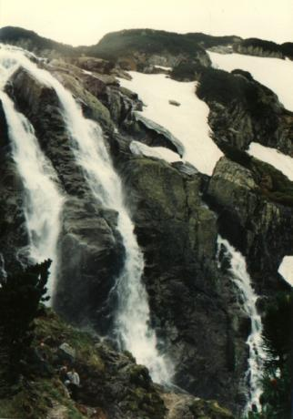
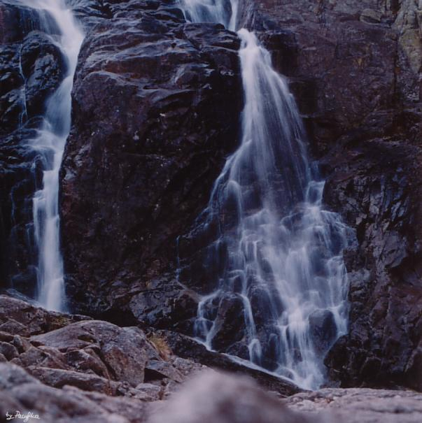
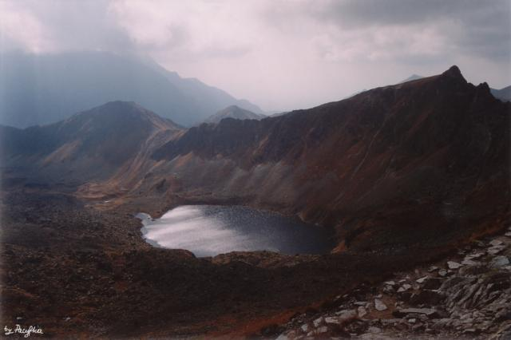
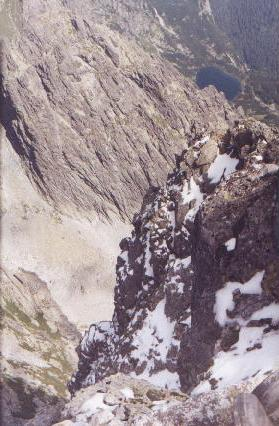
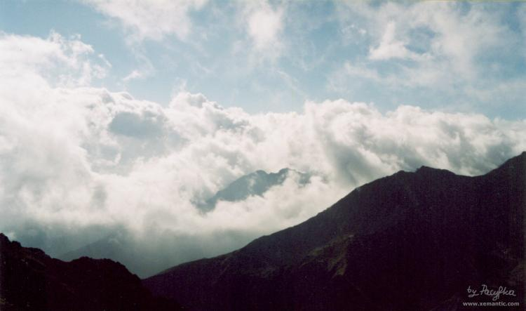
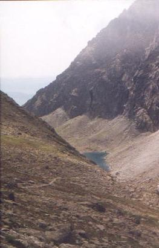
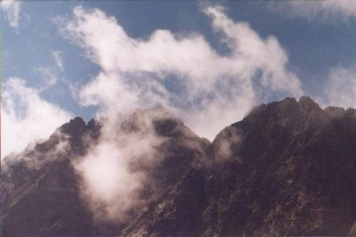
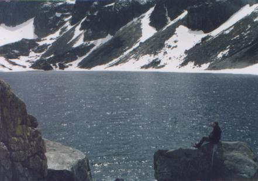

| Franciszek Nowicki (1864-1935)
Tatry
I
W dali!... jakby ciągnący ławą huf kresowy,
Wielki jak sny młodości - mroźny kraj śniegowy!
Tatry! czemuż jak siedzib szukające ptaki
O pustyni tatrzańska! bo na tym obszarze
|
| II
Spady Siklawy Przede mną rzeka śniegu lecąca pionowo,
To Siklawa! o dzika dzikich wód królowo!
Siklawo! ty huk gromom wyrwawszy zuchwale,
Tęsknoto! ty, żrąc ogniem skradzionym u słońca,
|

Siklawa fot. Mama |
| Siklawa fot. Pacyfka |
 |
| IV
Zawrat Stanąłem na przełęczy... świat czarów pode mną!
Pieśń runami granitów pisana przede mną!
Siadłem - cisza na górach - oko stawów drzymie,
Wiatr - bajarz lekkim palcem strunę marzeń trąca,
|
| Widok z Zawratu na Zadni Staw
fot. Pacyfka |
 |
| VI
Rysy Patrzę... tam roztopione szarych mas bałwany,
Grzywą śniegów zastygły na ich karkach piany,
Całe życie się zbiegło w mym oku zdumiałem:
Tam w powiekach skał jeziór czernieją źrenice
|

"...Tam w powiekach skał jeziór czernieją źrenice I rząd grzbietów obrosłych zimy runem białem..." Widok z Rysów w stronę Ciężkiej Doliny fot. Pacyfka |
| IX
Mgły na szczytach Szczyt pode mną jak statek płynie w chmurne morze!
Burza morska! wiatr fale swym oddechem orze -
Już słońce zatopione... ćma kryje bałwany...
Mgły! was lekki wiatr spędzi - gór szczyty odsłoni!
|
| 
...Szczyt pode mną jak statek płynie w chmurne morze!... Widok z Krzyżnego fot. Pacyfka |
| XII
Zmarzły Staw pod Garłuchem Wchodzę w gardło doliny - w lejek skał ponury...
To śnieg wieczny, płaszcz biały tej mroźnej natury;
Staczam oko po jego ścianach, w głębi stronę...
Na staw schodzę; lód jego trwożne czoło studzi,
|
 "...jak trupa olbrzyma zapadłe szklanne oko..." Długi Staw pod Gerlachem fot. Pacyfka |
| "To kompas chmurnych łodzi, gdy płyną w lazury..." Gerlach fot. Pacyfka |
 |
| XVI
Towarzyszowi podróży Wzdłuż - wszerz Tatry przebiegłem - on wszędzie u boku! -
Skakał za mną przez jary, przez grzbiety potoku,
Rozpacz gnała mię w paszczę burzy rozszalałej,
W ciszy pustyń, w burz ryku, w jasny dzień, w noc ciemną,
|
|
"On - mój ból - znów ze mną..." Czarny Staw Gąsienicowy i ja fot. Dziuny |
 |